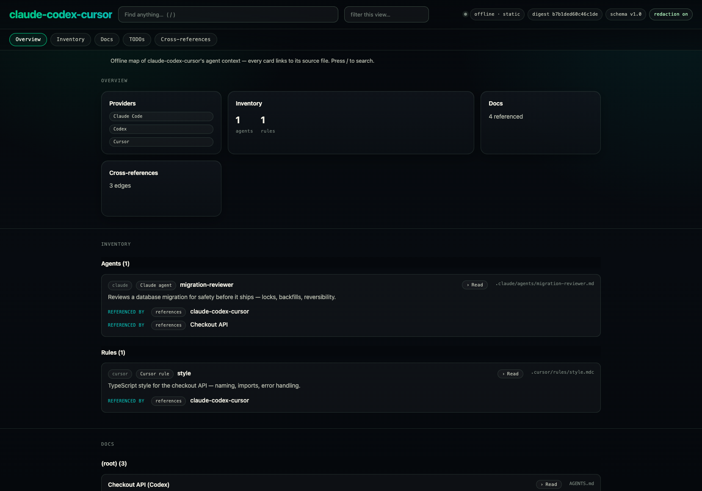
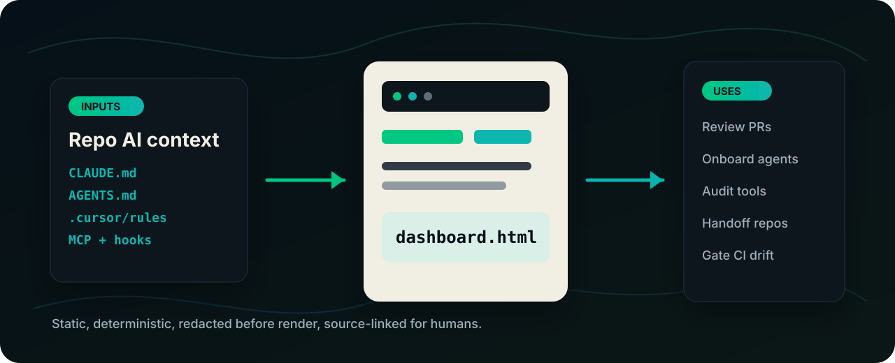

Regenerate the dashboard in a PR and inspect what changed across prompts, hooks, commands, MCP, and rules.
Static trust layer for AI-worked repos
Make AI context reviewable.
Agent Context Center turns AGENTS.md, CLAUDE.md,
Cursor rules, MCP servers, hooks, commands, skills, docs, and TODOs into one
offline dashboard that humans can open, diff, and commit.
acc --root . writes a source-linked dashboard.html into the owning provider folder.

Use it where AI context can drift.
ACC is built for the review moments around coding agents, not for a marketing demo that only looks good once.
Give a new maintainer or agent one source-linked map instead of a tour through hidden config folders.
See the declared MCP servers and hooks with redacted summaries, grouped by provider and source path.
Commit a deterministic snapshot so the next person sees the repo's AI surface without trusting chat history.
Use acc doctor --strict to flag stale dashboards and weak metadata in CI.
Publish a static demo from GitHub Pages with no backend, telemetry, CDN, or runtime service.

Repo AI contextAGENTS.md, CLAUDE.md, Cursor rules, MCP, hooks, commands, docs, and TODOs.
dashboard.htmlOne static, redacted, source-linked map generated from the repo.
Developer workflowsReview PRs, onboard agents, audit tools, hand off repos, and gate CI drift.
How it works.
Markdown remains the source of truth. The dashboard is a generated read view for humans.
Walks files deterministically while skipping local state, secrets, caches, and build artifacts.
Claude, Codex, Cursor, and generic markdown become one shared inventory and docs schema.
Secret-shaped values are redacted before rendering, then a tripwire checks the assembled output.
A self-contained dashboard opens offline and can be reviewed like any other generated file.
acc doctor --root . --strict
# deterministic checks
# stale dashboard
# weak metadata
# broken relative links
# redaction count
# open TODOsAgents already know how to read the markdown. ACC gives humans the same operating picture, with source links and a file they can review.
Static HTML · deterministic output · stdlib Python 3.12+ · no telemetrySecurity boundary
Review before publishing.
- ACC redacts secret-shaped strings before rendering and re-scans the assembled output.
- It is not a full entropy scanner, so unusual secrets still need human review.
- The dashboard maps and summarizes repo context. It does not run agents, manage tools, or replace source markdown.